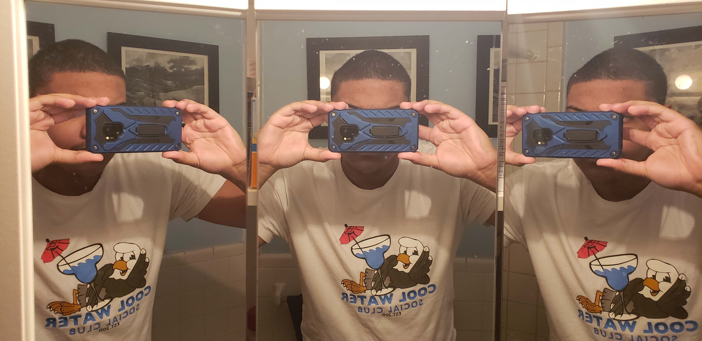

About Me
My name is Anderson James Bean, but you can call me AJ. I was born in Cambridge, Massachusettes and have lived here my whole life. I have traveled a lot and have developed a passion for photography. I'm proud of the photos I've taken and I know how to work with limited equipment. As of May 2021, all pictures on here were taken with a celphone camera, with little to no control over the shutterspeed and aperture, . But photography isn't my only skill, I also have a knack for video editing. A few video I've made and edited are in the videos tab. Also, I made this website myself.
I really enjoy making the projects I have to show off here. The most important thing to me when making them is to make sure I actually enjoy making it and want to make it. By working like that, I can make sure I am proud of all the work I do.